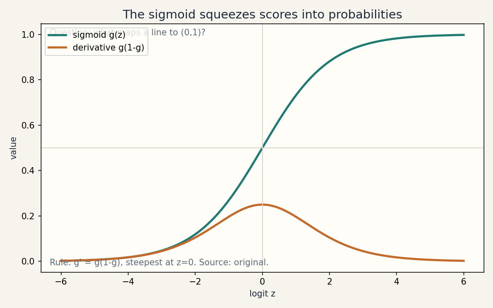
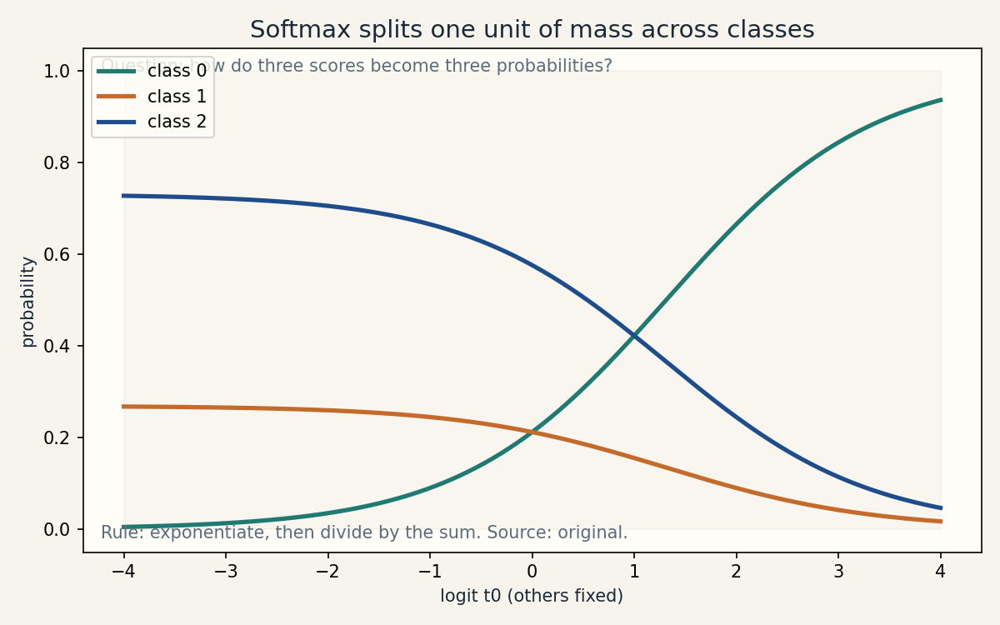

Lesson 03 · Classification, GLM
Lesson 03, Classification and generalized linear models
Unit: cs229-U03. Leaf concepts: cs229-U03-C01 to C12. Date: 2026-10-06. Baseline: October 6, 2026.
Source mapping
Chapters 2 and 3 of the notes (SRC-01, PDF pages 22-34) were read in full on 2026-10-06. Chapter 2 gives the sigmoid, the Bernoulli likelihood, the LMS-like gradient ascent update, the perceptron digression, multiclass softmax with the cross-entropy gradient, and Newton updates. Chapter 3 gives the exponential family form, the Bernoulli and Gaussian worked examples, and the three-step GLM construction recipe. Separation pathologies are bridge content. Leaf rows carry SOURCE ATTRIBUTION PENDING until the RUN 6 adversarial pass.
Scope and objectives
Scope: from binary classification to the general recipe that produces linear regression, logistic regression, and softmax from one template.
Objectives: the learner can (1) derive the logistic gradient update, (2) implement the stable logistic loss, (3) derive the softmax cross-entropy gradient, (4) explain the perceptron and its limits, (5) apply Newton updates, (6) write Bernoulli and Gaussian in exponential-family form, (7) run the three-step GLM recipe, (8) diagnose separation.
Dependencies
Prerequisites: P05, P06, P07, P09 (shared bridges, linked).
Not-yet-understood list:
- The sigmoid as a probability (remediated in SL-01).
- Maximum likelihood for discrete outcomes (SL-01).
- The exponential family template (SL-06).
- Link functions (SL-07).
SL-01: Sigmoid, logit, Bernoulli likelihood
Covers C01 (sigmoid/logit), C02 (Bernoulli likelihood).
Source anchor
SRC-01 sections 2.1, pages 22-24. The notes define g(z) = 1/(1 + e^{-z}), show g’(z) = g(z)(1 - g(z)), and write the Bernoulli likelihood product.
Motivating question
Linear regression predicts 1.7 for a label that can only be 0 or 1. What function squeezes a line into a probability?
Tiny toy
Two emails. Features: x = [1, 3] (bias, count of “free”). theta = [-4, 1]. Logit t = theta^T x = -4 + 3 = -1. Sigmoid: g(-1) = 1/(1 + e^1) = 0.2689. Model says 27 percent spam.
Mental model
The logit is the raw score: any real number. The sigmoid maps it to (0, 1): a probability. The log odds (logit) is the natural scale for the update math. The probability is the natural scale for decisions.
Objects, symbols, assumptions
- Logit: t = theta^T x, real-valued.
- Sigmoid: g(t) = 1/(1 + e^{-t}). g -> 1 as t -> inf, g -> 0 as t -> -inf.
- Model: P(y = 1 | x, theta) = h_theta(x) = g(theta^T x).
- Compact likelihood: p(y | x, theta) = h^y (1 - h)^{1-y}.
- Assumption: labels are 0/1, examples independent.
Derivation: the gradient
Log likelihood for one example: l = y log h + (1 - y) log(1 - h), h = g(theta^T x).
dl/d theta_j = [y/h - (1-y)/(1-h)] * dh/d theta_j. dh/d theta_j = g(1-g) x_j = h(1-h) x_j. Multiply:
dl/d theta_j = [y(1-h) - (1-y)h] x_j = (y - h) x_j.
Update (gradient ascent): theta_j := theta_j + alpha (y^{(i)} - h_theta(x^{(i)})) x^{(i)}_j. It looks like LMS, but h is nonlinear in theta (notes page 24).
Computed example
Toy: theta = [-4, 1], x = [1, 3], y = 1. h = 0.2689. Error = 1 - 0.2689 = 0.7311. alpha = 0.5. theta_0 := -4 + 0.5 * 0.7311 * 1 = -3.6344. theta_1 := 1 + 0.5 * 0.7311 * 3 = 2.0967. New logit: -3.6344 + 2.0967*3 = 2.6557. New h = 0.9344. One step moved the probability from 0.27 to 0.93 on this example.
Correctness checks
- h in (0, 1) always. Outside means a bug.
- The gradient (y - h) x has the shape of theta.
- At h = y the gradient is zero: no update on a perfect confident prediction.
Nearest alternative
Probit uses the Gaussian CDF instead of the sigmoid. Same shape, different tail math, no closed-form gradient as clean as g(1-g).
Failure case
Fitting linear regression to 0/1 labels: predictions leave [0, 1] and the squared error punishes confident correct answers. The notes reject this on page 22.
SL-02: The stable logistic loss
Covers C03 (stable logistic loss).
Source anchor
SRC-01 remark 2.1.1, page 24: the logistic loss l_logistic(t, y) = y log(1 + e^{-t}) + (1-y) log(1 + e^{t}).
Motivating question
Your code computes log(sigmoid(1000)). What happens?
Mental model
sigmoid(1000) rounds to exactly 1.0 in float64. log(1) = 0, but the true answer is about -1000 * tiny, not zero. Worse, 1 - sigmoid(1000) = 0 and log(0) = -inf. The naive formula dies at the extremes. The stable form never forms the probability.
Derivation
Loss = -[y log g(t) + (1-y) log(1 - g(t))]. Use log g(t) = -log(1 + e^{-t}) = -softplus(-t) and log(1 - g(t)) = -softplus(t). So loss = y * softplus(-t) + (1-y) * softplus(t), with softplus(t) = log(1 + e^t) computed as max(t,0) + log(1 + e^{-|t|}). No overflow for any finite t.
Computed example
t = 1000, y = 1. Naive: g = 1.0, log g = 0, loss 0 (wrong: true loss is e^{-1000}, underflows to 0 anyway, but the gradient path through 1 - g = 0 gives log 0 = -inf in the y = 0 case). Stable: softplus(-1000) = 0 + log(1 + e^{-1000}) = 0.0 exactly, loss 0. For y = 0, t = 1000: stable loss = softplus(1000) = 1000 + log(1 + e^{-1000}) = 1000. Naive: 1 - g(1000) = 0, log 0 = -inf. The stable form wins.
Minimal implementation
import numpy as np
def softplus(t):
return np.maximum(t, 0.0) + np.log1p(np.exp(-np.abs(t)))
def logistic_loss(t, y):
return y * softplus(-t) + (1.0 - y) * softplus(t)
print(logistic_loss(1000.0, 0.0)) # 1000.0, finite
print(logistic_loss(-1000.0, 1.0)) # 1000.0, finite
Expected: both print 1000.0. No inf, no nan.
Correctness checks
- Loss is finite for t in [-1e6, 1e6].
- Gradient dl/dt = g(t) - y matches finite differences.
- At t = 0, loss = log 2 = 0.6931 for either label.
Failure case
Using the naive formula inside a training loop: the first confident example produces -inf, the gradient becomes nan, and every parameter turns to nan within one step. This is the most common logistic regression bug.
SL-03: Softmax and the cross-entropy gradient
Covers C04 (multiclass softmax), C05 (cross-entropy derivative).
Source anchor
SRC-01 section 2.3, pages 25-27. The notes define softmax, the cross-entropy loss l_ce(t, y) = -log(exp(t_y) / sum_j exp(t_j)), and derive d l_ce / d t_i = phi_i - 1{y = i}.
Motivating question
Three classes: spam, personal, work. How do we get three probabilities that sum to 1?
Mental model
Score each class: t_i = theta_i^T x. Exponentiate to make them positive, divide by the sum to normalize. The result is a probability vector. Cross-entropy then asks: how much probability did the true class get? Its gradient is beautifully simple: predicted minus true.
Objects, symbols, shapes
- Logits t in R^k. Softmax phi_i = e^{t_i} / sum_j e^{t_j}.
- Loss: l_ce = -log phi_y.
- Gradient: d l_ce / d t = phi - e_y (predicted minus one-hot truth), shape (k,).
- Per-class parameters theta_i, each shape (n,).
Derivation
l = -t_y + log sum_j e^{t_j}. d l / d t_i = -1{i = y} + e^{t_i} / sum_j e^{t_j} = phi_i - 1{y = i}. Chain rule to theta_i: d l / d theta_i = (phi_i - 1{y = i}) x (notes page 27).
Computed example
t = [2.0, 1.0, 0.1], y = 0. Exponentials: 7.389, 2.718, 1.105. Sum: 11.212. phi = [0.659, 0.242, 0.099]. Loss: -log(0.659) = 0.417. Gradient: phi - [1,0,0] = [-0.341, 0.242, 0.099]. The true class gets pushed up, the others pushed down.
Stable softmax: subtract max(t) before exponentiating. t - 2 = [0, -1, -1.9]. Exponentials: 1, 0.368, 0.150. Same phi, no overflow.
Minimal implementation
import numpy as np
def softmax(t):
t = t - np.max(t)
e = np.exp(t)
return e / e.sum()
t = np.array([2.0, 1.0, 0.1])
p = softmax(t)
print(p, p.sum()) # sums to 1
Expected: [0.659 0.242 0.099], sum 1.0.
Correctness checks
- Probabilities sum to 1 within 1e-12.
- Adding a constant to all logits leaves phi unchanged. Test this: softmax(t + 5) == softmax(t).
- Gradient dot one-vector is zero (probability mass is conserved).
Nearest alternative
One-vs-rest: k binary classifiers. Simpler, but the scores do not form a coherent distribution.
Failure case
Naive exp on t = [1000, 1001]: overflow to inf, phi = nan. The max-subtraction trick is not optional.
SL-04: The perceptron
Covers C06 (perceptron).
Source anchor
SRC-01 section 2.2, pages 24-25. The notes replace the sigmoid with a hard threshold and keep the LMS-like update, and warn that the perceptron lacks a probabilistic reading.
Motivating question
What if the sigmoid is replaced by a hard step: 1 if the score is non-negative, else 0?
Mental model
The perceptron predicts with a threshold and updates only on mistakes: theta := theta + alpha (y - h) x with h in {0, 1}. No probabilities, no likelihood, no confidence. It is a mistake-driven rule from the 1960s, kept because it starts the learning-theory analysis (U08).
Computed example
theta = [0, 0], x = [1, 2], y = 1. Score 0 >= 0, h = 1. No mistake, no update. Next: x = [1, -1], y = 1. Score 0, h = 1. Still no update. Now y = 0 with x = [1, 5]: score 0, h = 1, mistake. Update with alpha = 1: theta := [0,0] + (0 - 1)[1, 5] = [-1, -5]. New score on [1, 5]: -1 - 25 < 0, h = 0. Fixed.
Correctness checks
- Updates happen only on mistakes. Count them.
- On separable data the perceptron converges in finite steps (proved in U08 bridges).
Nearest alternative
Logistic regression: same linear score, smooth probabilistic output, gradient on every example.
Failure case
Non-separable data: the perceptron cycles forever, never settling. Logistic regression degrades gracefully instead. Also: the threshold has zero gradient almost everywhere, so no gradient method can train through it.
SL-05: Newton updates
Covers C07 (Newton updates).
Source anchor
SRC-01 section 2.4, pages 27-28. The notes build Newton’s method from tangent-line root finding and give the maximization update theta := theta - l’(theta)/l’‘(theta), then the vector form.
Motivating question
Gradient ascent walks uphill with a fixed step size. Can we use the curvature to pick the step?
Mental model
Newton fits a quadratic bowl to the function at the current point and jumps to the bowl’s top. One step is exact on a true quadratic. The price: the Hessian (matrix of second derivatives), O(n^3) per step to invert.
Objects and derivation
Maximize l(theta). Newton: theta := theta - H^{-1} grad l, H = grad^2 l. For logistic regression the Hessian is H = -sum_i h^{(i)}(1 - h^{(i)}) x^{(i)} (x^{(i)})^T: negative definite, a weighted Gram matrix with weights h(1-h). The update is iteratively reweighted least squares.
Computed example
1-D logistic toy: one parameter theta, one example x = 1, y = 1. l(theta) = -softplus(-theta). Start theta = 0. grad = y - g(0) = 0.5. H = -g(0)(1-g(0)) = -0.25. Newton step: theta := 0 - 0.5/(-0.25) = 2.0. One step jumps from 0 to 2. Gradient ascent with alpha = 1 would move to 0.5. Newton uses the curvature to stride further.
Correctness checks
- The Hessian must be negative definite for maximization. Check its eigenvalues on a toy.
- On a quadratic, Newton converges in one step. Test this on least squares.
Complexity
O(m n^2) to form H, O(n^3) to invert, per step. Fewer steps than gradient descent, costlier steps.
Nearest alternative
L-BFGS: approximates the Hessian from gradient history, no explicit matrix. Gradient descent: no Hessian, many cheap steps.
Failure case
n = 100,000 features: the Hessian is 1e10 entries, never fits in memory. Newton is the wrong tool. Also: on non-concave objectives Newton can jump to a minimum or a saddle.
SL-06: The exponential family
Covers C08 (exponential family), C09 (natural/sufficient parameters).
Source anchor
SRC-01 section 3.1, pages 30-32. The notes define p(y, eta) = b(y) exp(eta^T T(y) - a(eta)) and work Bernoulli and Gaussian into this form.
Motivating question
Linear regression and logistic regression look different but share the same update shape. What is the common template?
Mental model
Many distributions share one algebraic shape: a base measure b(y), times exp(natural parameter dot sufficient statistic minus log partition). The natural parameter eta is the dial. The sufficient statistic T(y) is all the data the dial cares about. The log partition a(eta) keeps it normalized.
Bernoulli in the family
p(y, phi) = phi^y (1-phi)^{1-y} = exp(y log(phi/(1-phi)) + log(1-phi)). Read off: eta = log(phi/(1-phi)) (the logit), T(y) = y, a(eta) = log(1 + e^{eta}), b(y) = 1. Invert: phi = 1/(1 + e^{-eta}): the sigmoid appears by algebra, not by choice (notes page 31).
Gaussian in the family
With sigma^2 = 1: p(y, mu) = (1/sqrt(2 pi)) exp(-y^2/2) exp(mu y - mu^2/2). Read off: eta = mu, T(y) = y, a(eta) = eta^2/2, b(y) = (1/sqrt(2 pi)) exp(-y^2/2) (notes page 32).
Computed example
Bernoulli with phi = 0.7. eta = log(0.7/0.3) = log(2.333) = 0.847. a(eta) = log(1 + e^{0.847}) = log(3.333) = 1.204. Check normalization: sum_y b(y) exp(eta y - a) = exp(-1.204) + exp(0.847 - 1.204) = 0.2997 + 0.6999 = 1.0 (up to round-off error).
Correctness checks
- The density sums/integrates to 1 for the read-off (eta, T, a, b). Always verify.
- d a / d eta = E[T(y)]: the mean falls out of the log partition. For Bernoulli: d/d eta log(1+e^eta) = e^eta/(1+e^eta) = phi. Check this by hand.
Nearest alternative
Distributions outside the family (mixtures, heavy tails) need other machinery. The family covers the workhorses.
Failure case
Forgetting the dispersion: with general sigma^2 the Gaussian needs a two-dimensional eta or a dispersion parameter (notes page 32 footnote). Using eta = mu alone with unknown sigma^2 is incomplete.
SL-07: Link function and the GLM recipe
Covers C10 (link function), C11 (GLM construction).
Source anchor
SRC-01 section 3.2, pages 32-34. The notes state three assumptions: y given x and theta follows an exponential family with parameter eta. The goal predicts E[T(y) | x]. Eta = theta^T x.
Motivating question
Given a new target type (counts, say), how do you invent the right regression in five minutes?
Mental model
Three steps. (1) Pick the exponential family that matches the target: Poisson for counts. (2) Set the prediction to the family mean: h(x) = E[y | x]. (3) Tie the natural parameter to the features linearly: eta = theta^T x. The link function is the bridge from the mean to the linear score: eta = g_link(mu).
Objects
- Link: eta = g_link(mu), mu = E[y | x].
- Canonical link: eta = theta^T x directly.
- Logistic regression: Bernoulli family, mu = phi, eta = log(mu/(1-mu)), canonical. Gives h = g(theta^T x).
- Least squares: Gaussian family, mu = eta, identity link. Gives h = theta^T x.
Computed example: Poisson counts
Customers per hour, y in {0, 1, 2, …}. Poisson: p(y, lambda) = e^{-lambda} lambda^y / y! = exp(y log lambda - lambda - log y!). Read off: eta = log lambda, T(y) = y, a(eta) = e^{eta}, b(y) = 1/y!. Mean: d a/d eta = e^{eta} = lambda. Link: eta = log mu. GLM: log mu = theta^T x, so h(x) = e^{theta^T x}. Counts get a log link: predictions stay positive automatically.
Numbers: theta = [0.5, 0.2], x = [1, 3]. eta = 0.5 + 0.6 = 1.1. Predicted mean: e^{1.1} = 3.004 customers/hour.
Correctness checks
- The prediction respects the target’s range: positive for Poisson, (0,1) for Bernoulli.
- The gradient keeps the (y - h) x shape for canonical links. This is the “deeper reason” the notes promised on page 24.
Nearest alternative
Non-canonical links (probit for Bernoulli) trade the clean gradient for a different shape. Sometimes the domain demands it.
Failure case
Identity link on counts: theta^T x goes negative, the model predicts -2 customers. The link exists to prevent exactly this.
SL-08: Separation and pathologies
Covers C12 (separation/pathologies).
Motivating question
The data is perfectly separable. Logistic regression should be happy. Why do the weights blow up?
Mental model
If a line separates the classes perfectly, pushing the weights toward infinity keeps improving the likelihood: the sigmoid saturates toward 0/1 and the loss keeps falling. No finite maximum exists. The optimizer never stops. The weights grow without bound.
Computed example
Points: (1, 0) label 0, (2, 1) label 1. Any theta with theta_1 > 0 and threshold between 1 and 2 separates them. Take theta = [−1.5 c, c] with x_0 = 1: scores -1.5c + c = -0.5c < 0 and -1.5c + 2c = 0.5c > 0 for any c > 0. Loss: softplus(-0.5c) + softplus(-0.5c) -> 0 as c -> inf. The likelihood has no finite maximizer.
Diagnosis and fixes
- Diagnose: weights grow steadily, loss keeps falling, predictions saturate at 0/1.
- Fix: add a penalty (ridge, U09), which bounds the weights. Or use a Bayesian prior (U09).
- The perceptron has the same issue in reverse: it stops at the first separator, with no margin preference (U06 fixes this with max-margin).
Nearest alternative
Linear discriminant analysis (U04) always has a finite solution: it fits class densities, not a separating line.
Assessment
Breadth recall
E01: Write the sigmoid and its derivative. E02: Write the Bernoulli log likelihood for n examples. E03: Why does the LMS-like update not make logistic regression the same algorithm as LMS? E04: State the softmax gradient in vector form. E05: Define natural parameter and sufficient statistic. E06: Run the three GLM steps for Bernoulli.
Deep oral ladders
L01 (logistic): (1) Define the model. (2) Toy: the email example, one gradient step. (3) Derive dl/d theta_j. (4) Implement the stable loss and test at t = 1e6. (5) Compare gradient ascent vs Newton: cost per step, steps to converge. (6) Debug: nan after one epoch. Name the cause. (7) Critique: the IID label assumption on email data. (8) Design: pick the optimizer for n = 1e6 features, m = 1e8 examples.
L02 (GLM): (1) State the exponential family form. (2) Toy: Bernoulli phi = 0.7 to eta. (3) Show the sigmoid inverts the logit. (4) Implement Poisson GLM prediction. (5) Compare canonical vs non-canonical link gradients. (6) Debug: negative count predictions. Name the broken step. (7) Critique: when does the linear-eta assumption fail? (8) Design: choose the family and link for waiting-time data.
Analytical exercises
E07: t = [3.0, 1.0], y = 1 (index 1). Compute softmax, loss, gradient. Answer in keys. E08: Derive d a/d eta = E[T(y)] from normalization. Answer in keys.
Failure diagnosis
E09: Training loss hits -inf on the first batch. The code uses log(sigmoid(t)). Diagnose and give the fixed line.
Counterfactual comparison
E10: Team A trains logistic regression with Newton on n = 200 features. Team B uses L-BFGS on n = 200,000 features. Justify each choice and name what breaks if they swap.
Research question
E11: On separable synthetic data, the MLE weights diverge. Propose an experiment that measures the divergence rate as a function of the margin. State the falsifiable claim.
Implementation task
E12: Implement stable multiclass cross-entropy with the max-subtraction trick and verify shift invariance and the gradient against finite differences.
Visual units
visuals/u03/u03_sigmoid.png: sigmoid and its derivative (source: original, computed).

visuals/u03/u03_softmax.png: probability simplex for 3 classes as one logit varies (source: original, computed).

Research reading and extension
Read: SRC-01 chapters 2-3 in full. Extension: fit logistic regression two ways (gradient ascent, Newton) on a separable and a non-separable toy. Log weight norms and loss per iteration. Falsifiable claim: on separable data the gradient-ascent weight norm grows without bound while the loss tends to zero. Newton diverges faster.